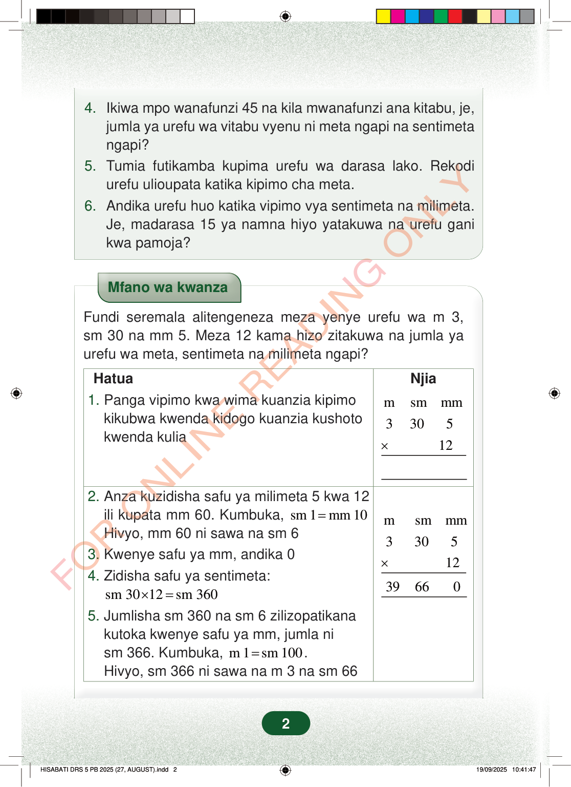

4.Ikiwa mpo wanafunzi 45 na kila mwanafunzi ana kitabu, je,jumla ya urefu wa vitabu vyenu ni meta ngapi na sentimetangapi?5.Tumia futikamba kupima urefu wa darasa lako. Rekodiurefu ulioupata katika kipimo cha meta.6.Andika urefu huo katika vipimo vya sentimeta na milimeta.Je, madarasa 15 ya namna hiyo yatakuwa na urefu ganikwa pamoja?Mfano wa kwanzaFundi seremala alitengeneza meza yenye urefu wa m 3,sm 30 na mm 5. Meza 12 kama hizo zitakuwa na jumla yaurefu wa meta, sentimeta na milimeta ngapi?Njiamsmmm3305Hatua1.Panga vipimo kwa wima kuanzia kipimokikubwa kwenda kidogo kuanzia kushotokwenda kulia12×msmmm3305×12396602.Anza kuzidisha safu ya milimeta 5 kwa 12ili kupata mm 60. Kumbuka,sm 1mm 10=Hivyo, mm 60 ni sawa na sm 63.Kwenye safu ya mm, andika 04.Zidisha safu ya sentimeta:sm 3012sm 360×=5.Jumlisha sm 360 na sm 6 zilizopatikanakutoka kwenye safu ya mm, jumla nism 366. Kumbuka,m 1sm 100=.Hivyo, sm 366 ni sawa na m 3 na sm 662
4. Ikiwa mpo wanafunzi 45 na kila mwanafunzi ana kitabu, je, jumla ya urefu wa vitabu vyenu ni meta ngapi na sentimeta ngapi? 5. Tumia futikamba kupima urefu wa darasa lako. Rekodi urefu ulioupata katika kipimo cha meta. 6. Andika urefu huo katika vipimo vya sentimeta na milimeta. Je, madarasa 15 ya namna hiyo yatakuwa na urefu gani kwa pamoja?
Mfano wa kwanza
Fundi seremala alitengeneza meza yenye urefu wa m 3, sm 30 na mm 5. Meza 12 kama hizo zitakuwa na jumla ya urefu wa meta, sentimeta na milimeta ngapi?
Njia
m sm mm
3 30 5
Hatua 1. Panga vipimo kwa wima kuanzia kipimo kikubwa kwenda kidogo kuanzia kushoto kwenda kulia
12 ×
m sm mm
3 30 5
×
12
39 66 0
2. Anza kuzidisha safu ya milimeta 5 kwa 12 ili kupata mm 60. Kumbuka, sm 1 mm 10 = Hivyo, mm 60 ni sawa na sm 6 3. Kwenye safu ya mm, andika 0 4. Zidisha safu ya sentimeta: sm 30 12 sm 360 × = 5. Jumlisha sm 360 na sm 6 zilizopatikana kutoka kwenye safu ya mm, jumla ni sm 366. Kumbuka, m 1 sm 100 = . Hivyo, sm 366 ni sawa na m 3 na sm 66
2
4.Ikiwa mpo wanafunzi 45 na kila mwanafunzi ana kitabu, je, jumla ya urefu wa vitabu vyenu ni meta ngapi na sentimeta ngapi?5.Tumia futikamba kupima urefu wa darasa lako.Rekodi urefu ulioupata katika kipimo cha meta.6.Andika urefu huo katika vipimo vya sentimeta na milimeta.Je, madarasa 15 ya namna hiyo yatakuwa na urefu gani kwa pamoja?Mfano wa kwanzaMfano wa kwanza unaonyesha hatua za kuzidisha urefu wa meza 12, kila moja ikiwa m 3, sm 30 na mm 5. Jibu linaonyeshwa kuwa jumla ni m 39, sm 66 na mm 0.Fundi seremala alitengeneza meza yenye urefu wa m 3, sm 30 na mm 5.Meza 12 kama hizo zitakuwa na jumla ya urefu wa meta, sentimeta na milimeta ngapi?HatuaNjia1.Panga vipimo kwa wima kuanzia kipimo kikubwa kwenda kidogo kuanzia kushoto kwenda kuliam sm mm3 30 5× 122.Anza kuzidisha safu ya milimeta 5 kwa 12 ili kupata mm 60.Kumbuka, sm 1 = mm 10Hivyo, mm 60 ni sawa na sm 63.Kwenye safu ya mm, andika 04.Zidisha safu ya sentimeta:sm 30×12 = sm 3605.Jumlisha sm 360 na sm 6 zilizopatikana kutoka kwenye safu ya mm, jumla ni sm 366.Kumbuka, m 1 = sm 100.Hivyo, sm 366 ni sawa na m 3 na sm 66m sm mm3 30 5× 1239 66 0